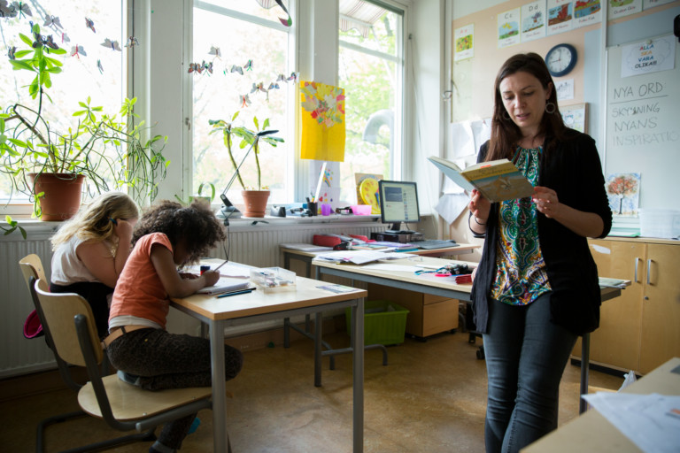
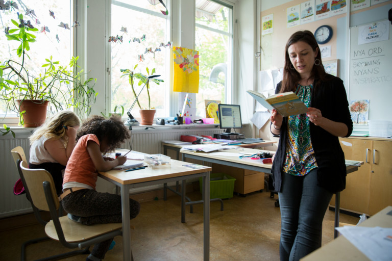

Welcome To Sweden

Edjucation in sweden
Education in Sweden is mandatory for children between ages 7 and 15. The school year in Sweden runs from mid/late August to early/mid June. The Christmas holiday from mid December to early January divides the Swedish school year into two terms. Preschool is free for low-income families and subsidized with a price ceiling for all families. The year children turn six they start the compulsory preschool class (förskoleklass), which act as a transition phase between preschool and comprehensive schools. Children between ages 7 and 15 attend comprehensive school where a wide range of subjects are studied. All students study the same subjects, with exception for different language choices. The majority of schools are run municipally, but there are also privately owned schools, known as independent schools.Almost all students continue studying in 3 year long upper secondary schools where most students choose one out of 18 national programmes some of which are vocational and some preparatory. For students not fulfilling the requirements for the national programmes, introductory programmes are available where students work to satisfy the requirements for the national programmes. In 2018, 16% of students finishing year 9 of comprehensive school were not eligible for national programmes. The higher education system is compatible with the rest of Europe through the Bologna Process where degrees are divided into 3 cycles, basic level, advanced level and doctoral level. There are two degrees available in each cycle of different lengths. Universities have no tuition fees for Swedish citizens (as well for citizens of European Economic Area сountries), and student aid is available from the government.
Upper Secondary education
Upper Secondary school, called gymnasieskola, usually lasts for three years. It's elective, but with a 99% enrollment rate
(OECD 2018).It is divided into 18 different national programmes with different educational focus.The system is course based
with the same courses being used for multiple programmes. There are also introductory programmes for students who don't
satisfy the requirements for the national programmes. A significant number of these students are immigrants learning Swedish.
National programmes:
The national programmes are divided into two categories: preparatory and vocational. All national programmes give basic
qualification to attend university,[51] but preparatory programs typically also satisfy the additional requirements needed
to study university courses in specific subject areas.In 2018 approximately one third of students studying a national
programme were studying a vocational programme while two thirds were studying a preparatory programme.

 
